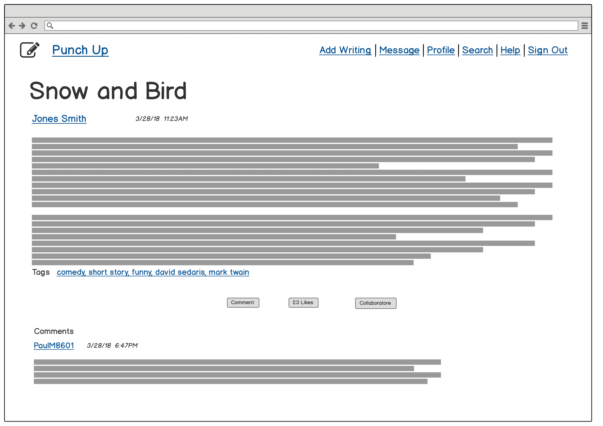

Punch Up

Overview
About
A writing community web app for writers to create, share, and collaborate on their writingsDuration
2 months (August - October 2018)My Role
UX Researcher + DesignerProblem
For writers who are just starting out that want to share their writings and want to find a writing partner. Whether they want to collaborate, want feedback, share ideas, etc. But another issue is what about privacy? How can you be sure that your idea or story will not be stolen?Research
User Interviews
To answer these questions, I conducted 5 user interviews to several writers, some who write for leisure and professional. I wanted to get a better understanding of:
Key Points
Majority would be interested in a writing partner and/or collaborate if they share similar interest or had interesting work
My original idea for building the app was to implement a watermark on their work to prevent stealing ideas or work.
But after conducting the interviews, "stealing" ideas was not a concern of theirs.
80% interviews stated with any creative field, it's bound to happen or people can approach ideas differently. In conclusion, one interview stated,
"once you share your story or idea, it's no longer yours."
The idea of the watermark implementation has been omitted
So the new problem that arose is: How can writers have easy access to other writers with similar interests within the same community?
User Persona
I developed two main personas based on user research. I've created one persona Molly, who is a serious writer that wants to find writers that share the same passion and interest as her.
The other persona, Penny, who is a creative writer who writes for fun. As much as she loves her friends and family, she wants to meet other writers that she could share her writing that will give her an unbiased critique on her work which can help her improve as a writer.
But is she not too sure where to go and meet these other writers.
Competitve Analysis
I analyzed and researched other writing platforms such as Medium and Writer's Cafe. Medium is more article and opinion pieces, whereas Writer's Cafe is more for creative writing. Also, what I found interesting with Writer's Cafe is that they had a section of publication contacts.
Information Architecture

Click to view
From there, I was able to create an Information Architecture of where certain labels can be on specific features of the app and I could plan on designing the
layout of the app.
User Flow

Click to view
Based on the research, I wanted to create a user flow that allows users to navigate other writings.
When viewing other user's writings, they can also have the option to collaborate which will allow you to message the author of the work.
Visual Design
My inspiration when coming up with the design, layout, colors and typography is clean, simple and nostalgic.
Sketching
After reviewing the research and analyzing competitors,
I wanted to create a layout where you would be able to view many writings without it being overwhelming.
I want the author's link of the writing to be easily contacted for users.

Wireframing
In my wireframe, I created the outline of how the contents should go together and be viewed on the browser. I used Balsamiq to create them.

Click to view

Click to view

Click to view

Click to view
Style Guide
My inspiration on the style guide for the app. The font header is Rokkit which is similar to old typewriter font, whereas the body of the text will be Lato for easy reading. The color palette inspired by notebook lined paper.Click to view

{kind=link}
{kind=link}
{kind=link}
{kind=link}
{kind=link}
{kind=link}
{kind=link}
{kind=link}
User Testing
When conducting the user testing, majority of the users aid the layout was pretty clean, simple and easy to use.
The navigation was pretty straight foward. Some criqitues I received were:
Take Aways and Improvements
Since there were few user testings, it did not generate a lot of edge cases as I would anticipate. However, I would like to improve on the UI that when the user clicks on the collaborative button,
a modal would be able to pop up and the user could make any edits if they wish to send to the writer rather than an message.
I had a fun experience creating this app from the ground up. I had a goal which was to create an app that allows writers to share their writing and communicate with other writers who share
a similar interest and to see if they are interested in collaborating a project.
It continues to astonish me that something like this was just an idea. I put my idea to the test by conducting research and and visual design to make this into a reality.